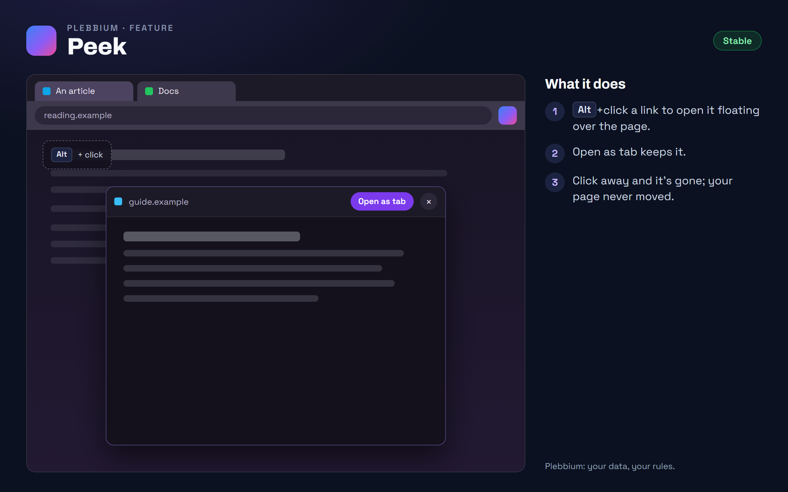

All features › Shipped › Peek
Peek
Stablesince 3604Hold Alt and click a link: it opens in a floating window over the page you're on. Keep it as a tab, or click away and it's gone.

How to use it
- Hold Alt and click a link.
- Read it in the floating window; your page stays where it was.
- Keep it with Open as tab, or click outside it to close it.
- Its size: Plebbium settings › Peek.
When it arrived
156.0.8078.360418 Oct 2026 · Beta and Stable
Peek.
Why it works this way
Only for its own tab
A page can ask for a peek only for itself, never for another tab, so a website can't use it to pop things up elsewhere.
A glance, not a commitment
Many links are read once: a peek saves opening, reading and closing a tab.